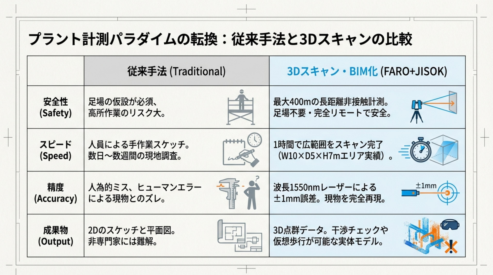

これまでの計測・設計事例をご紹介します。（※守秘義務に配慮し、詳細は一部変更しています）
3Dレーザースキャン計測の実際の作業風景と、その成果をご覧ください。
業種を問わず、計測・設計・施工の現場で確かな成果を出し続けています。



着実に積み重ねてきた信頼と成果
JISOKのサービスをご利用いただいたお客様からの評価
現地調査に何度も通っていたのが、1回のスキャンで全てのデータが揃いました。測り忘れの心配がなくなったのが一番大きいです。
図面がほぼ残っていない設備の改修で、3Dスキャンなしでは計画すら立てられませんでした。データの精度にも驚いています。